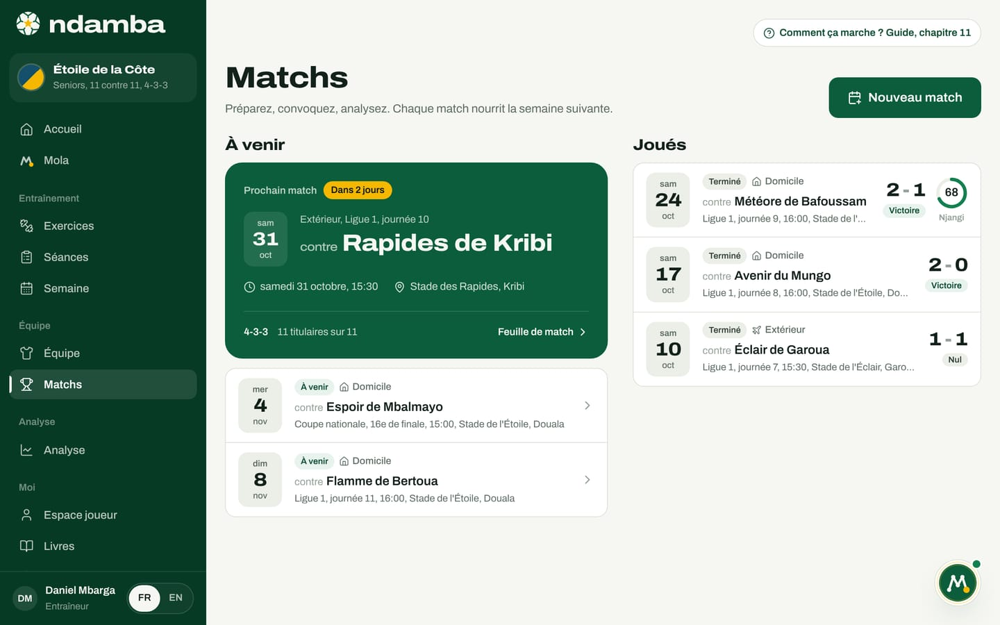
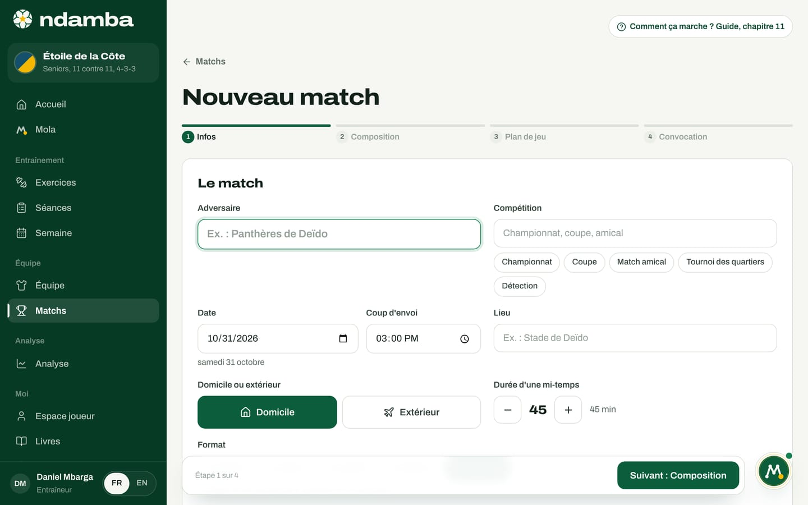
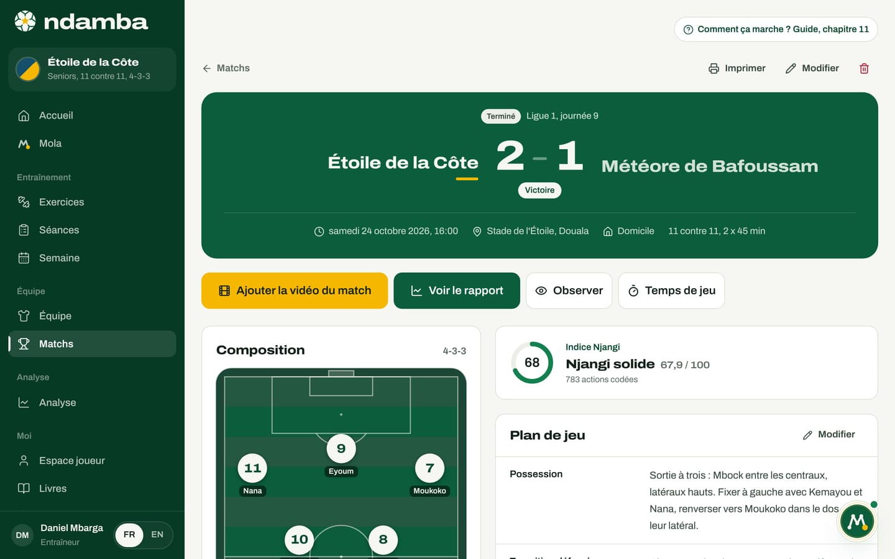

Préparer un match
La liste des matchs, la création d’un match en quatre étapes (infos, composition, plan de jeu, convocation), la feuille de match avant et après la rencontre, et la convocation que Mola rédige et que vous approuvez.
10 min de lecture
Dans beaucoup d’équipes, un match se prépare en morceaux : la composition sur un papier, le plan de jeu dans la tête de l’entraîneur, la convocation tapée tard le soir dans le groupe WhatsApp. Ndamba rassemble ces morceaux sur une seule feuille par match. Cette feuille sert ensuite au coup d’envoi, pour l’analyse en direct, puis après le coup de sifflet, pour le rapport et le temps de jeu de chaque joueur. Préparer, convoquer, analyser : chaque match nourrit la semaine suivante.
La liste des matchs
Ouvrez Matchs dans le menu, ou dans la barre du bas sur téléphone. La page a deux colonnes et un bouton Nouveau match.


À venir commence par une grande carte verte, le Prochain match. Elle indique quand il a lieu (Aujourd’hui, Demain ou Dans 2 jours, par exemple), Domicile ou Extérieur, la compétition, la date, l’heure, le lieu, le système et le nombre de titulaires déjà placés. Touchez-la pour ouvrir la Feuille de match. Les autres matchs à venir suivent en liste.
Joués liste les matchs terminés, du plus récent au plus ancien, avec le statut Terminé, le score (l’équipe qui reçoit à gauche), le résultat (Victoire, Nul ou Défaite) et, si le match a été codé, un cadran avec l’Indice Njangi. Un match prévu dont la date est passée sans qu’il soit terminé y figure aussi, avec la mention Score à saisir. Un match en cours d’analyse porte la mention En direct.
Programmer un nouveau match
Touchez Nouveau match. La préparation se fait en quatre étapes : Infos, Composition, Plan de jeu et Convocation. La barre du haut montre où vous en êtes ; touchez une étape pour y aller directement. En bas, Précédent et Suivant (par exemple Suivant : Composition) vous guident, et la dernière étape se termine par Enregistrer le match. Seul l’adversaire est obligatoire : sans lui, Ndamba vous ramène à la première étape avec le message « Indiquez l’adversaire pour continuer ».
Étape 1 : les infos


- Adversaire : le nom de l’équipe d’en face.
- Compétition : écrivez-la, ou touchez une suggestion : Championnat, Coupe, Match amical, Tournoi des quartiers, Détection.
- Date et Coup d’envoi : Ndamba propose le samedi qui vient, à 15 heures ; changez-les si besoin.
- Lieu : le stade ou le terrain.
- Domicile ou extérieur : touchez Domicile ou Extérieur.
- Durée d’une mi-temps : de 5 à 60 minutes, par pas de 5. Par défaut, 45 minutes à 11 contre 11, 30 minutes à 8 et à 9, 20 minutes à 5 et à 7.
- Format : de 5 contre 5 à 11 contre 11. Changer de format adapte le système et la composition.
Étape 2 : la composition
Ndamba arrive avec une composition déjà faite, dans le système de départ de l’équipe. Le haut de l’étape propose les systèmes du format choisi :
| Format | Systèmes proposés | Par défaut |
|---|---|---|
| 11 contre 11 | 4‑3-3, 4‑2-3‑1, 3‑4-3, 4‑4-2, 3‑5-2 | 4‑3-3 |
| 9 contre 9 | 3‑3-2, 3‑2-3 | 3‑2-3 |
| 8 contre 8 | 3‑3-1, 2‑3-2 | 3‑3-1 |
| 7 contre 7 | 2‑3-1, 3‑2-1, 3‑1-2 | 2‑3-1 |
| 5 contre 5 | 1‑2-1, 2‑2 | 1‑2-1 |
Le terrain se lit de bas en haut : votre but en bas, l’attaque vers le haut. Pour changer un joueur :
- Touchez un poste sur le terrain. Une fenêtre s’ouvre, par exemple Poste : Latéral.
- En tête, Conseillés pour ce poste ; dessous, Autres joueurs. Chaque nom indique sa situation (titulaire à un autre poste, Remplaçant, Non retenu ou À ce poste) et sa barre de niveau.
- Touchez un joueur. S’il était titulaire ailleurs, les deux échangent leur place. S’il était remplaçant ou non retenu, il prend le poste et l’ancien titulaire part sur le banc.
- Pour vider un poste, touchez Laisser le poste libre.
Le bouton Composer automatiquement refait toute la composition : chaque joueur va au poste qui lui correspond le mieux, et les compétences départagent. Changer de système garde vos choix autant que possible : un joueur reste à son poste s’il existe encore, sinon il glisse vers le poste le plus proche, ou sur le banc.
Sous le terrain, trois blocs complètent le groupe. Capitaine : touchez un titulaire pour lui donner le brassard (Ndamba propose au départ le joueur au niveau moyen le plus haut). Remplaçants : la croix retire un joueur du groupe. Non retenus : touchez un nom pour l’ajouter aux remplaçants. Un compteur rappelle le total, par exemple « 11 titulaires, 9 remplaçants ».
Étape 3 : le plan de jeu
Le plan de jeu suit les quatre moments du jeu, plus les coups de pied arrêtés : Possession, Transition défensive, Défense, Transition offensive et Coups de pied arrêtés. Chaque moment pose sa question, par exemple « Que faisons-nous dans les secondes qui suivent la perte ? ». Écrivez librement, ou touchez les Idées Njangi proposées sous chaque champ : une idée touchée s’ajoute en nouvelle ligne, touchée à nouveau elle s’enlève. Pour la transition défensive, on trouve par exemple « Cinq secondes de contre-pression » ou « Défense de repos à 3 + 2 ». La consigne de l’écran vaut pour tous : une ou deux idées claires par moment valent mieux qu’une page de consignes.
Étape 4 : la convocation
Ndamba rédige le message du groupe : le nom de l’équipe et l’adversaire, la date, l’heure et le lieu, la liste des Titulaires et des Remplaçants, le rendez-vous 45 minutes avant le coup d’envoi avec les deux tenues, de l’eau et les protège-tibias, la demande de confirmation, et la devise « Le ballon doit voyager. Mais il doit savoir où il va. »
Tant que vous ne touchez pas au texte, il suit la composition : un changement de joueur à l’étape 2 met le message à jour. Si vous le modifiez, la mention Message modifié à la main apparaît, et Régénérer le message revient au texte automatique. Sous le message, cinq boutons l’envoient : WhatsApp ouvre WhatsApp avec le texte prêt (vous choisissez le groupe), SMS et E-mail ouvrent vos applications, Copier le met dans le presse-papiers, et Agenda (.ics) télécharge un fichier à ouvrir dans votre calendrier, avec le message en description. À côté, un aperçu montre l’affiche du match et la composition.
Touchez enfin Enregistrer le match. La feuille de match s’ouvre.
La feuille de match, avant le coup d’envoi

En haut, Matchs ramène à la liste, Imprimer produit une feuille propre (affiche, composition, liste du groupe avec le capitaine marqué « (C) », plan de jeu et devise), Modifier rouvre les quatre étapes sous le titre Modifier le match, et la corbeille supprime le match : sa composition et ses actions codées sont effacées de cet appareil.
La plaque verte rappelle le statut (À venir), la compétition, les deux équipes (celle qui reçoit à gauche), l’heure, la date, le lieu, Domicile ou Extérieur, le format et la durée (« 2 x 45 min »). Les boutons suivent. Ajouter la vidéo du match, en or, est le chemin conseillé : après le match, il ouvre le formulaire où l’on colle le lien YouTube ou Facebook de la vidéo (ou choisit le fichier), puis le studio où l’on code le match (chapitre 12) ; une fois la vidéo ajoutée, il devient Coder la vidéo. En direct, sans vidéo ouvre le codeur du bord du terrain, pour un match qui ne sera pas filmé ; il devient Reprendre le direct quand le match est en cours. Saisir le score sert pour un match que vous ne coderez pas, et Observer ouvre l’écran du chapitre 10 avec les titulaires et les remplaçants du match.
Dessous : la Composition sur le terrain, avec le Capitaine ; les Remplaçants, chacun menant à sa fiche ; le Plan de jeu, avec Modifier (ou Écrire le plan de jeu s’il est vide) ; et la carte Convocation, « le message du groupe, prêt à partir », avec Ouvrir pour le relire et les mêmes boutons d’envoi.
La convocation que Mola rédige
Mola peut préparer la convocation pour vous. Dans la discussion, tapez « Envoie la convocation », ou touchez la suggestion du même nom. Mola prend le prochain match (ou celui dont vous nommez l’adversaire), reprend la composition enregistrée, rédige le message, puis s’arrête. Les étapes de la tâche le disent : « J’attends votre accord avant d’ouvrir quoi que ce soit ».
La carte En attente de votre accord apparaît alors :
- Envoyer par : choisissez WhatsApp, SMS, E-mail ou Copier.
- Numéro (facultatif), ou Adresse e-mail (facultatif) et Objet pour un e-mail.
- Message : relisez le texte ; Modifier le rend éditable, Terminer referme l’édition.
- Touchez Approuver et ouvrir WhatsApp (ou le bouton de la voie choisie). Ndamba ouvre votre propre application avec le message prêt : c’est vous qui choisissez le groupe et appuyez sur Envoyer. Annuler abandonne la tâche, et rien ne sort de l’application.
La même carte attend dans Mola, onglet À valider, tant que vous n’avez pas décidé. Quand le prochain match approche, à quatre jours ou moins, et qu’aucune convocation n’a encore été préparée, Mola le propose de lui-même dans Mola a remarqué, avec le bouton Oui, rédige-la.

Si vous avez modifié le texte à la main à l’étape Convocation, Mola reprend votre version, exactement comme la feuille de match. Sinon, il rédige le message à partir de la composition enregistrée. Attention à un détail : un texte modifié à la main ne suit plus la composition. Si vous changez de joueurs ensuite, rouvrez le match avec Modifier et touchez Régénérer le message à l’étape Convocation.
Après le match
Quand le match est terminé, la feuille change. La plaque affiche le score en grand et le résultat (Victoire, Nul ou Défaite). Les boutons deviennent Ajouter la vidéo du match (ou Coder la vidéo), Voir le rapport (chapitre 13), Observer et Temps de jeu : la vidéo peut s’ajouter des jours après le match. Si le match n’a pas été codé, Corriger le score reste disponible. La carte de convocation disparaît.


Pour un match codé, sur la vidéo ou en direct, une carte Indice Njangi montre le cadran, l’appréciation (Njangi solide, par exemple), la valeur sur 100 et le nombre d’actions codées ; elle ouvre le rapport.
Pour un match que vous n’avez pas codé, Saisir le score ouvre la fenêtre Score final : réglez les deux scores avec les boutons plus et moins, puis Enregistrer le score. Le match passe en Terminé.
Temps de jeu ouvre la liste des titulaires et des remplaçants. Réglez les minutes de chacun avec les boutons moins 5 et plus 5, ou tapez le chiffre, puis touchez Enregistrer le temps de jeu. Sans saisie, un titulaire compte le match entier et un remplaçant zéro, même s’il est entré en jeu. Ces minutes nourrissent le parcours de chaque joueur : matchs joués, minutes, premier match et premières titularisations (chapitre 10). Quelques minutes après chaque match suffisent pour que la saison de chaque joueur soit juste.
La semaine d’un match, dans l’ordre
- Dès que le match est connu, créez-le avec Nouveau match, ou demandez-le à Mola. La date du match sert aussi au planificateur de la semaine (chapitre 9).
- En cours de semaine, ajustez la composition et le plan de jeu avec Modifier : blessures, absences, idées tirées des séances.
- La veille ou l’avant-veille, envoyez la convocation, depuis la feuille de match ou par Mola, une fois le banc vérifié.
- Le jour du match, faites filmer le match avec un téléphone posé en hauteur (chapitre 12). Sans caméra, touchez En direct, sans vidéo au coup d’envoi.
- Après le match, mettez la vidéo sur YouTube en « non répertoriée » ou sur Facebook, touchez Ajouter la vidéo du match et codez-la. Enregistrez le Temps de jeu, ouvrez Voir le rapport et retenez ce qu’il faut travailler la semaine suivante (chapitre 13).